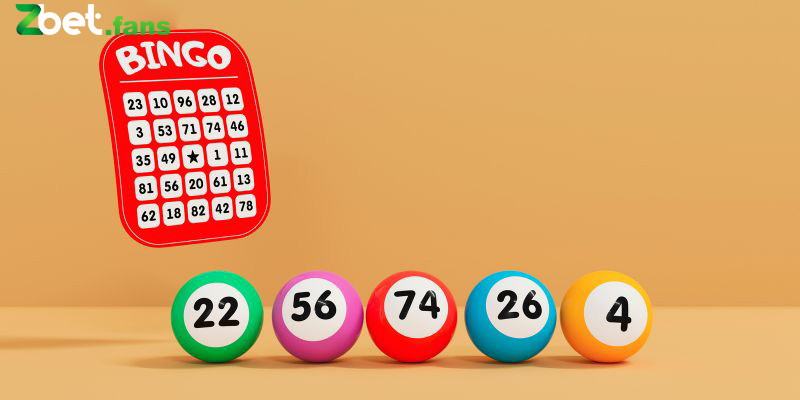

Hướng Dẫn Dự Đoán Xổ Số Miền Nam Đơn Giản Dễ Thắng
POSTED ON 26/04/2024 BY ADMIN
Xổ số miền Nam là sản phẩm không bao giờ vắng mặt trên các nền tảng giải trí trực tuyến. Đây là hình thức cá cược hấp dẫn, an toàn và trả thưởng cao nên bất cứ ai cũng muốn một lần thử sức. Để hiểu rõ hơn về sản phẩm đình đám này, mời thành viên cùng Zbet tìm hiểu chi tiết trong bài viết dưới đây.
Tìm hiểu về xổ số miền Nam
Xổ số kiến thiết miền Nam ra đời cùng với điểm với xổ số miền Bắc và miền Trung. Đây là hình thức giải trí có lịch sử lên đến 60 năm và hiện đang được Nhà nước quản lý.
Hiện nay, có đến 21 công ty cùng được lập ra để tổ chức chơi xổ số miền Nam. Mỗi đơn vị có một kế hoạch riêng để công bố kết quả trên 3-4 đài truyền hình. Chính vì điều này mà doanh thu của XSMN hiện nay là khá lớn.
Xổ số miền Nam sử dụng hình thức quay lồng cầu vào lúc 16h15 mỗi ngày để xác định kết quả. Lịch quay số hiện nay được xếp cụ thể như sau:
- Thứ hai: TPHCM, Cà Mau, Đồng Tháp sẽ quay số mở thưởng.
- Thứ ba: Bến Tre, Bạc Liêu, Vũng Tàu sẽ quay số trúng thưởng XSMN.
- Thứ tư: Việc quay số do Sóc Trăng, Cần Thơ và Đồng Nai cùng nhau thực hiện.
- Thứ năm: An Giang, Tây Ninh, Bình Thuận sẽ mở thưởng xổ số miền Nam.
- Thứ sáu: Bình Dương, Vĩnh Long, Trà Vinh cùng quay số và công bố kết quả.
- Thứ bảy: Long An, Hậu Giang, TPHCM, Bình Phước cùng quay số mở thưởng.
- Chủ nhật: Kiên Giang, Tiền Giang, Đà Lạt sẽ mở thưởng.
Xổ số miền Nam luôn thu hút người chơi nhờ giải thưởng rất lớn
Hình thức xổ số này có 18 lần quay số cho 9 hạng giải. Giá trị giải thưởng cao nhất hiện nay lên đến 2 tỷ đồng. Bên cạnh giải đặc biệt thì giải phụ đi kèm cũng rất lớn nên thu hút rất nhiều người tham gia mỗi ngày.
Một số phương pháp chơi xổ số miền Nam dễ thắng nhất
Trước đây, người ta tin rằng chỉ có may mắn mới có thể giúp bạn thắng trong xổ số. Tuy nhiên, giờ đây người ta đã biết cách kiểm soát cuộc chơi và tăng cơ hội trúng thưởng cho mình.
Dự đoán KQXS theo ngày kinh
Rất nhiều người chơi hiện nay sử dụng ngày kinh để đánh xổ số miền Nam và mang về kết quả rất tốt. Bên cạnh đó, anh em có thể sử dụng ngày tháng năm sinh, lịch âm, 12 con giáp, phong thủy, ngũ hành… để tìm con số chuẩn xác nhất.
Trong quá trình xác định các con số, thành viên nên lưu ý đến cách quy đổi. Mỗi phương pháp bạn dùng sẽ có một cách quy đổi khác nhau nên anh em phải chắc chắn là đang soi cầu đúng thì mới có cơ hội thắng được.
Soi cầu xổ số miền Nam dựa vào cách chọn con số ngẫu nhiên
Việc lựa chọn các con số ngẫu nhiên là một cách rất nhiều người chơi đang sử dụng. Phương pháp nghe có vẻ đơn giản nhưng không phải ai cũng biết cách dùng và thắng được.
Thành viên có thể chọn lọc các con số ngẫu nhiên để đánh xổ số miền Nam
Hiện nay, bên cạnh việc dùng các con số ngẫu nhiên, giới cao thủ còn đối chiếu với KQXS những ngày gần đây để tăng cơ hội thắng. Cụ thể, bạn có thể điểm qua kết quả lô gan, lô rơi, bạc nhớ… gần đây.
Điều này giúp bạn chọn ra những con số ngẫu nhiên có cơ hội thắng cao nhất. Sau đó, bạn cần phải tính toán và chọn ra thời gian nuôi khung phù hợp để tăng tỷ lệ trúng trong cuộc chơi.
Đi tìm con số may mắn theo chỉ dẫn của những giấc mơ
Rất nhiều người đã đi theo gợi ý của giấc mơ để chơi thắng trong xổ số miền Nam. Với người Á Đông, giấc mơ là điềm báo, dấu hiệu dự đoán trước nhiều vấn đề trong cuộc sống.
Chính vì gắn chặt với tâm linh của người Việt nên giấc mơ cũng là gợi ý chơi lô đề, xổ số. Vì thế, bạn sẽ thấy nhiều khái niệm đặc biệt như số mơ cho thành viên sử dụng.
Hiểu đơn giản đây là một dạng giải mã ý nghĩa các giấc mơ và đi tìm con số phù hợp. Ở đây, người ta sẽ dùng ngữ cảnh, nội dung, sự việc liên quan, người mơ… để xác định.
Gợi ý từ những giấc mơ cũng là một cách để chơi xổ số miền Nam chuẩn
Anh em có thể tham khảo ý kiến của những người có kinh nghiệm trong việc này để chơi đúng. Ngoài ra, bạn có thể tham khảo các trang xổ số chuyên nghiệp vì họ có giải mã chi tiết từng giấc mơ thường gặp.
Bắt cầu xổ số miền Nam dựa vào kết quả của các con số
Nếu muốn chơi thắng, anh em nên thường xuyên theo dõi bảng KQXS. Ở đây, những người có kinh nghiệm thường tính xác suất về của các con số, tần suất về của chúng là bao nhiêu.
Bên cạnh đó, rất nhiều website hiện nay có thể thống kê những con lô thường về hoặc lâu ngày không về. Từ đây mà việc xác định quy luật xổ số miền Nam không còn khó khăn.
Thông qua việc thống kê kết quả xổ số, thành viên có thể sử dụng nhiều cách soi cầu như tổng đề, đầu câm đuôi câm, bạc nhớ, lô rơi, đề chạm… để tăng cơ hội thắng lớn.
Anh em có thể theo dõi bảng KQXS để tìm con số phù hợp nhất cho mình
Xổ số miền Nam xứng đáng là lựa chọn hàng đầu của thành viên khi giải trí. Ngay nay, với nhiều phương pháp soi cầu mới mẻ, thành viên có thể trúng thưởng mà không cần dựa vào vận may. Hy vọng những gợi ý trên đây của Zbet sẽ giúp thành viên nhanh chóng có thành tích khi chơi.